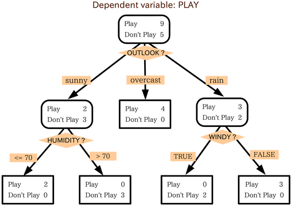
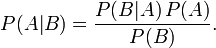
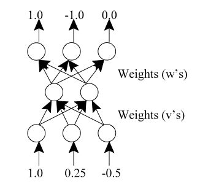

Classification
Introduction
Classification is the task of assigning objects to one of several predefined categories. The typical classification process has three steps: training, testing, and validating. The first step to classification is building a model based on training data. Training data is data that you already know the class data for the records. After building a model with the training data you then run test data through it. Test data is data that you know the class label of but you remove the class label so that the model can try to predict it. The last step is validating that your model has a high enough accuracy to be useful to you. If your model is not accurate enough then you can rebuilt it using different training data. Sometimes you may need to use less training data as your model may be over fitting your data. Below I will provide brief descriptions of several common classification techniques.
Decision Tree
The decision tree algorithm works by building a tree of decisions that isolate classes based on differences in attributes. At each node the algorithm chooses the split that produces the purest leafs. Below is an example of a decision tree for deciding whether or not it is a day to play golf. Figure 1. Golf decision tree.
Decision trees strengths lie in its ability to be easy to interpret and to be able to build models on small amounts of data.
Rule-Based
Rule-Based classifiers work by using a set of If-Then rules to determine class labels. For example using figure 1 as an example, we could have a rule IF sunny AND humidity <= 70 THEN Play. Rule based classifiers can be very similar to the logic in a Decision Tree. A decision tree can be represented by a set of mutually exclusive and exhaustive rules. Because they are so similar their common use cases and strength and weaknesses are identical.
Nearest Neighbors (NN)
Nearest Neighbors classifiers are known as lazy learners because they do no build a model. Nearest Neighbors classifiers work by measuring the distance between the object you want to classify and every other training data object you provide. Then it finds the nearest K neighbors where K is a number the user specifies. You then assign the objects class to be the label of the same as the majority of nearest neighbors.

Figure 2. Example of NN classifier.
Nearest Neighbors strength is in that it is cheap and quick to use. No model needs to be built and indexing methods can be used so that you do not need to compute the distance to every data object in the set. They are susceptible to noise and the user chosen value of K can greatly effect the accuracy of the model (See figure 2 for an example).
Bayesian
Bayesian classifiers use a probabilistic approach to building a classification model based on Bayes Theorem. A Naive Bayes classifier works by assuming all the attributes are conditionally independent given the a class label. Using this assumption the model only has to compute the conditional probabilities of each attribute given each class label. Using this information a new data object can be classified by which class it has the highest probability of belonging to based off of the probabilities of each attribute. Bayes is robust against isolated noise points and irrelevant attributes.
Figure 3. Bayes Theorem
Artificial Neural Networks (ANN)
ANNs were first created by attempts to mimic biological nervous systems. They are constructed of several layers. Usually a input layer, hidden layer, and an output layer. Every layer has one or more nodes which are connected to every node in the next layer. They use activation functions of a hyperbolic nature to keep the values of the outputs between -1 and 1. Back-propagation is the typical way that an ANN learns by giving it a data object to run. Then telling it the correct answer and it adjusts the weights on the connections as it needs to. ANN are useful because when using a hidden layer they are universal approximators. One drawback is that they take a long time to train but once they are trained they can classify quickly.
Figure 4. Example ANN layout


Figure 5. ANN in Ruby
Figure 1 src= http://gautam.lis.illinois.edu/monkmiddleware/public/analytics/decisiontree.html
Figure 2 src= http://en.wikipedia.org/wiki/K-nearest_neighbor_algorithm
Figure 3 src= http://en.wikipedia.org/wiki/Bayes%27_theorem
Figure 4 src= http://mines.humanoriented.com/classes/2011/fall/csci568/project/07.html